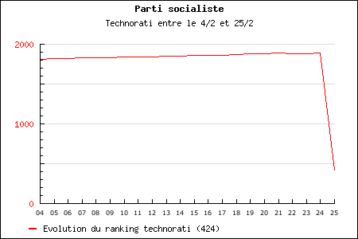

Étrange bond du PS
Ce matin, je reçois plusieurs mails me signalant un bug sur bonVote. Le PS est soudain passé en première position du baromètre. Je crois tout d’abord à un bug puis je me rends compte d’un truc étrange. Alors que hier le PS avait un ranking technorati de 1886, il se retrouve aujourd’hui avec un ranking de 424, ce qui implique des centaines de liens entrant supplémentaires. Est-ce dû à un sursaut des sympathisants qui ont tous pointé vers le site officiel ou est-ce un bug technorati ? Nous y verrons plus clair sans doute demain. Pour le PS, il n’est pas encore temps de crier cocorico comme vient de le faire Miguel Membrado.

Suite | 2007 | Sommaire | Texte publié dimanche 25 février 2007